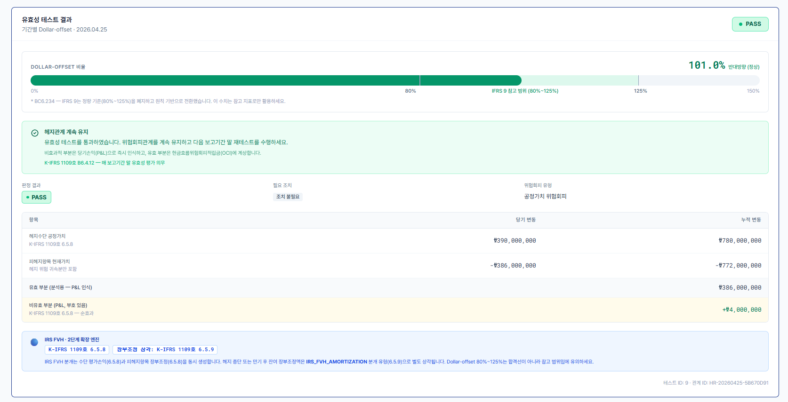

빌드, 테스트, 회계 시나리오, 자동 분개, 입력 검증 결과를 정리한 검증 문서입니다.
핵심 테스트와 빌드 통과
제출 전 임시파일 정리 완료
Journal/Effectiveness 핵심 테스트 통과
npm ci 및 Vite production build 통과
임시파일, 캐시, 로컬 설정 제외 후 업로드
| 검증 항목 | 결과 | 비고 |
|---|---|---|
| 백엔드 핵심 테스트 | PASS | journal/effectiveness |
| 프런트 설치 | PASS | 0 vulnerabilities |
| 프런트 빌드 | PASS | chunk size warning만 존재 |
| GitHub 업로드 | PASS | private repository |
| 시나리오 | 검증 내용 | 상태 |
|---|---|---|
| FX Forward CFH | 유효분 OCI, 비효과분 P/L, Lower of Test 부호 처리 | 검증 |
| FX Forward FVH | 수단 평가손익과 피헤지항목 장부조정 분개 | 검증 |
| IRS FVH | IRS 수단 평가손익, 채권 장부금액 조정, 비효과 P/L | 검증 |
| IRS FVH 상각 | K-IFRS 6.5.9 장부금액 조정 잔액 상각 | 검증 |
| CRS | 요구사항과 갭 분석 | 후속 |
IRS FV 변동 +390,000,000원, 피헤지항목 장부조정 -386,000,000원, Dollar-offset 약 -1.0104, 비효과 P/L +4,000,000원.
-386,000,000원을 3기 상각할 경우 1기 상각액은 128,666,666.67원입니다.

Dollar-offset 결과를 숫자와 막대로 표시합니다.
회계 판단 결과와 필요한 조치를 분리해 보여줍니다.
K-IFRS 6.5.8과 6.5.9 근거를 안내합니다.
계약 ID 누락, 헤지 유형/위험 조합 오류, 동일 계약 중복 지정, 0/0 유효성 테스트를 차단합니다.
Zod와 폼 검증으로 헤지 비율, 금액, 날짜, 필수 필드 오류를 사전에 확인합니다.
| 위험 | 방어 방식 | 효과 |
|---|---|---|
| 잘못된 enum/date | JSON 파싱 오류를 400으로 정리 | 500 오류 노출 방지 |
| 계약 ID 누락 | HD_002 | NPE 방지 |
| 부적절한 조합 | HD_014 / HD_015 | 회계 부적합 입력 차단 |
| 중복 지정 | DESIGNATED 상태 재지정 차단 | 중복 헤지관계 방지 |
| 0/0 테스트 | 서비스 계층 계산 차단 | 무의미한 비율 방지 |
| 테스트 | 검증 내용 | 상태 |
|---|---|---|
| IRS FVH E2E | 계약 등록, 평가, 지정, 테스트, 자동 분개, 상각 분개 흐름 | PASS |
| JournalEntryService | FVH/CFH/IRS 분개 라우팅과 입력 검증 | PASS |
| LowerOfTestCalculator | CFH 유효분과 비효과분의 부호 처리 | PASS |
| HedgeDesignationService | 계약 누락, 조합 오류, 중복 지정 차단 | PASS |
| HedgeRebalancingService | 재조정 전 비효과성 분개와 비율 클램프 | PASS |
node_modules, dist, build, .idea, .fuse_hidden, 로컬 로그와 캐시를 제외했습니다.
CRS 전체 엔진, 실시간 시장 데이터, K-IFRS 1107 공식 공시, 운영 권한은 후속 범위입니다.